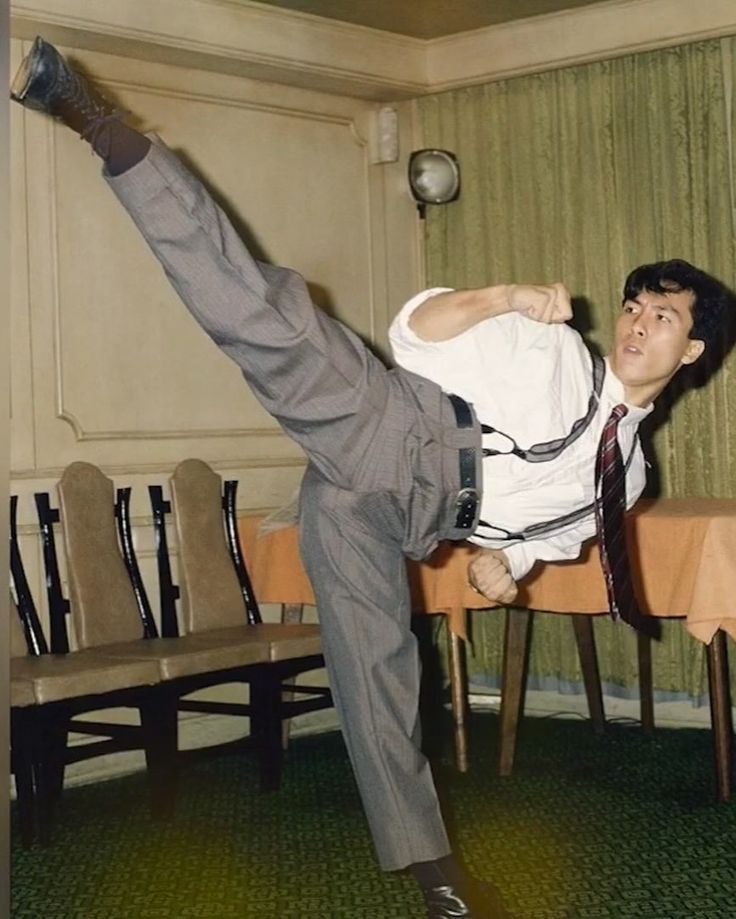

Donnie Yen
Donnie Yen (born 1963) is a Hong Kong actor, martial artist, film director, and producer known for his dynamic and versatile fighting style. Trained in multiple disciplines, including Wing Chun, Taekwondo, and Brazilian Jiu-Jitsu, Yen is acclaimed for blending traditional Kung Fu with modern action choreography. He gained worldwide fame for his portrayal of Ip Man in the Ip Man film series, which brought renewed interest to Wing Chun and historical martial arts figures. Donnie Yen has also starred in Hollywood films such as Rogue One: A Star Wars Story and xXx: Return of Xander Cage, expanding his influence internationally. He is recognized for his skill, charisma, and contribution to modern martial arts cinema.
